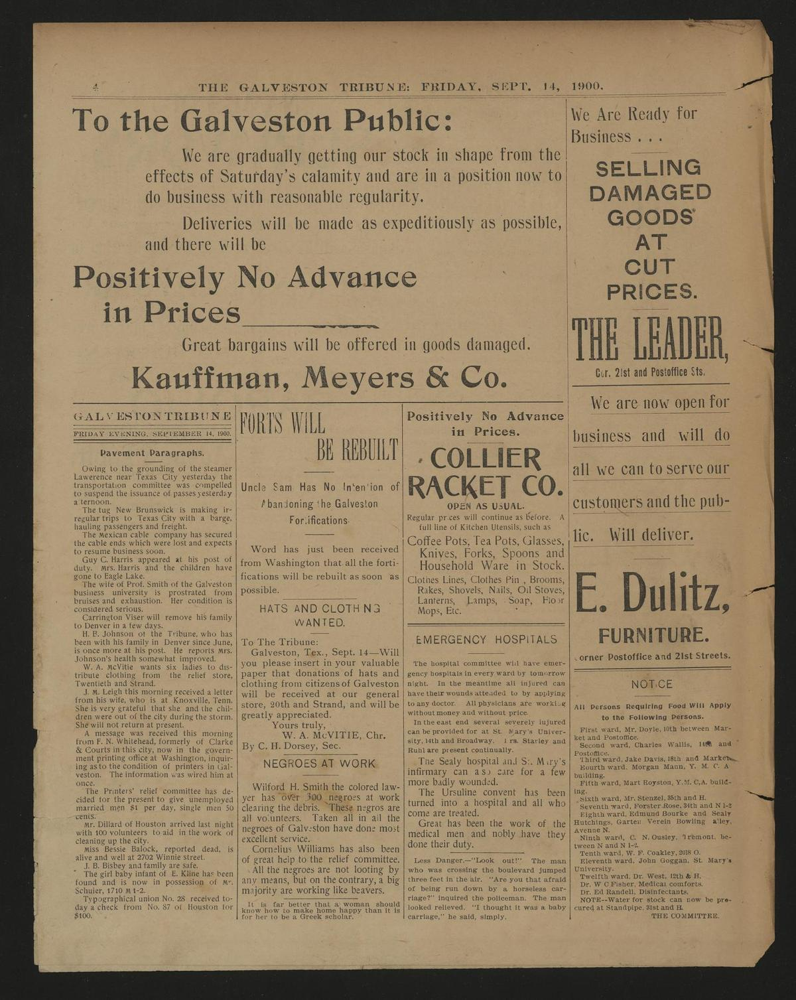

HN-323: Galveston newspaper count falls far below the catastrophe's later scale
HN-323 · September 14, 1900 · Disasters, Accidents & Emergencies > Hurricanes, Tornadoes, Dust & Severe Storms > Hurricanes

page scanRecorded finding
1900 Galveston hurricane papers printed lower and higher preliminary death tolls even on 14 September.
Discovery narrative
Source: Rensselaer Semi-Weekly Republican, p. 2 — original page; Galveston Historical Foundation and History Center FAQ; National Park Service history.
Report: After the September 8 hurricane, a front-loaded summary reported 2,500 people killed or missing in Galveston and 2,000 at other Texas locations, with 37 towns damaged or destroyed. A witness who escaped by schooner described widespread waterfront destruction; communications failures left the scale uncertain.
Assessment: An early undercount, not the accepted final loss. The Galveston history institution says the precise number is unknowable but judges roughly 7,000–8,000 likely; NPS describes approximately 6,000–8,000 in the city. Distinguish city, island, and wider-region estimates.
Curated audit flag
Class: Unverified lead (Q)
Recorded difference/concern: 1900 Galveston hurricane papers printed lower and higher preliminary death tolls even on 14 September.
Assessment: Five A appearances saved; numerators need extracting from each original page.
Source links: https://texashistory.unt.edu/ark:/67531/metapth1220534/m1/4/ https://historicnewspapers.sc.edu/lccn/sn93067701/1900-09-14/ed-1/seq-1/ocr/ https://oregonnews.uoregon.edu/lccn/sn83025138/1900-09-14/ed-1/seq-1/ocr/
Original archive images (4)
Authentic images retrieved from The Portal to Texas History (University of North Texas), Historic Oregon Newspapers (University of Oregon), South Carolina Historic Newspapers (University of South Carolina) and Hoosier State Chronicles (Indiana State Library). Article crops are located using the archive's own OCR word coordinates and rendered at native crop resolution; article clips are assembled from the archive's own article-block images; page images marked "archive tiles" are stitched from the archive's own tiled page service at its 256-px tile cap; page images marked "issue PDF" are single pages rasterised from the archive's own issue PDF, with the page chosen by matching the headline against the PDF's text layer; page scans are reduced-size access renditions. No images were generated, mocked, or retouched.

The Portal to Texas History (University of North Texas)
Open larger view · Archive viewer (full resolution)

Historic Oregon Newspapers (University of Oregon)
Open larger view · Archive viewer (full resolution)

South Carolina Historic Newspapers (University of South Carolina)
Open larger view · Archive viewer (full resolution)

Hoosier State Chronicles (Indiana State Library)
Open full-resolution clip · Archive viewer (full resolution)
Source acquisition
Status: Archive images acquired
Authentic archive-owned image renditions were retrieved for this record and are displayed above. The source-acquisition manifest preserves the original pre-acquisition feasibility assessment.
Original seed
URL (preserved verbatim): https://newspapers.library.in.gov/?a=d&d=RSWR19000914.2.25
Saved research report: Historical_Newspaper_Event_Research_303-327_2026-10-23.md
Evidence note: A newspaper report means a historical publication made a claim; it does not establish that claim as fact. Contemporary reporting is separated from later scholarly context and our own assessment.